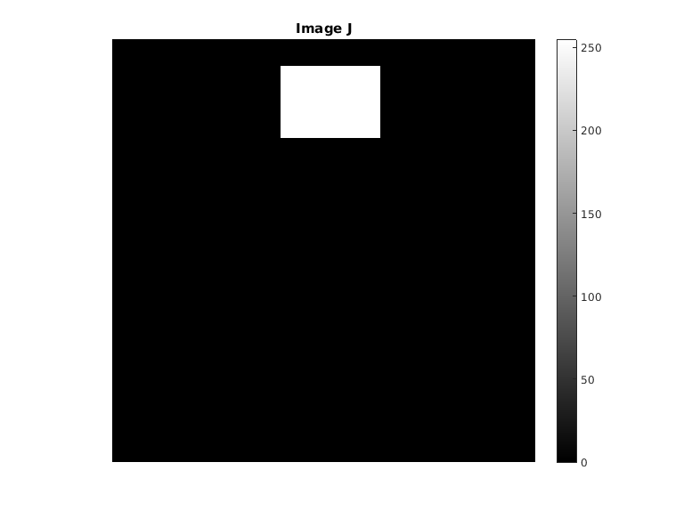
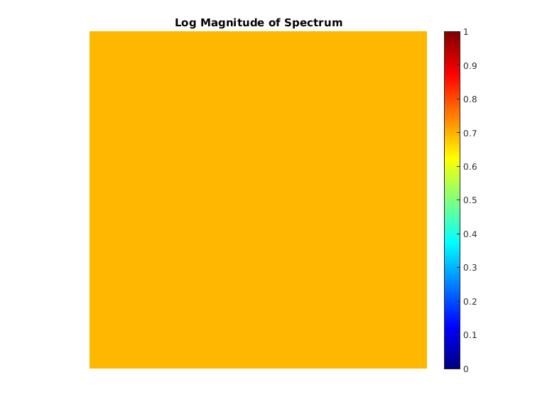
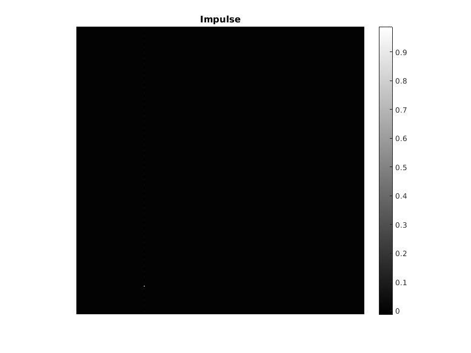
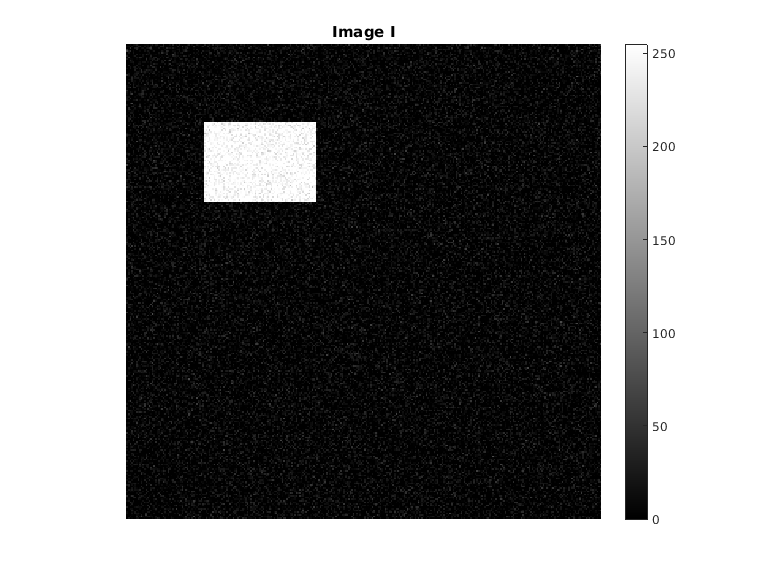
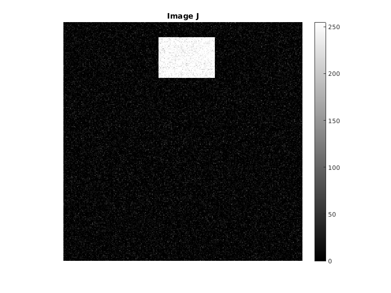
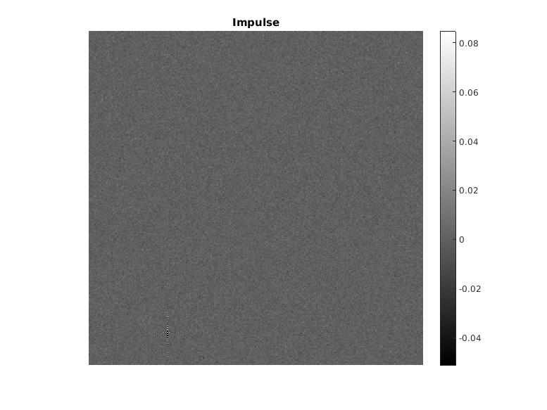

CS 663 Assignment 5, Question 5
Aman Kansal, Ansh Khurana, Kushagra Juneja
Contents
Code
clc; clear all; close all; warning('off', 'all'); tic;
Translation of noiseless images
I = zeros(300); I(50:100,50:120) = 255; J = zeros(300); J(20:70,120:190) = 255; myTranslator(I,J); toc;
X0 = 271, Y0 = 71 Elapsed time is 2.086721 seconds.  
Translation of noisy images
Noisy_I = I + 20*randn(size(I)); Noisy_J = J + 20*randn(size(J)); Noisy_I = max(0, min(255, Noisy_I)); Noisy_J = max(0, min(255, Noisy_J)); myTranslator(Noisy_I, Noisy_J); toc;
X0 = 271, Y0 = 71 Elapsed time is 8.068648 seconds.  
Results
As we can see, in both cases the algorithm has correctly predicted that how much the images are translated. X0 = 271, Y0 = 71 has the maximum intensity in the Inverse Fourier Transform in both noiseless and noisy cases. However, in the case of noisy image, the values are non-zero at other points too and also the impulse at X0, Y0 is 0.08 as compared with value 1 in the noiseless image. This difference is due to the gaussian noise added in the image. X0 = 271, Y0 = 71 correspond correctly to tx = -30 and ty = 70 due to the 1 based indexing of MATLAB. Hence, this algorothm is verified.